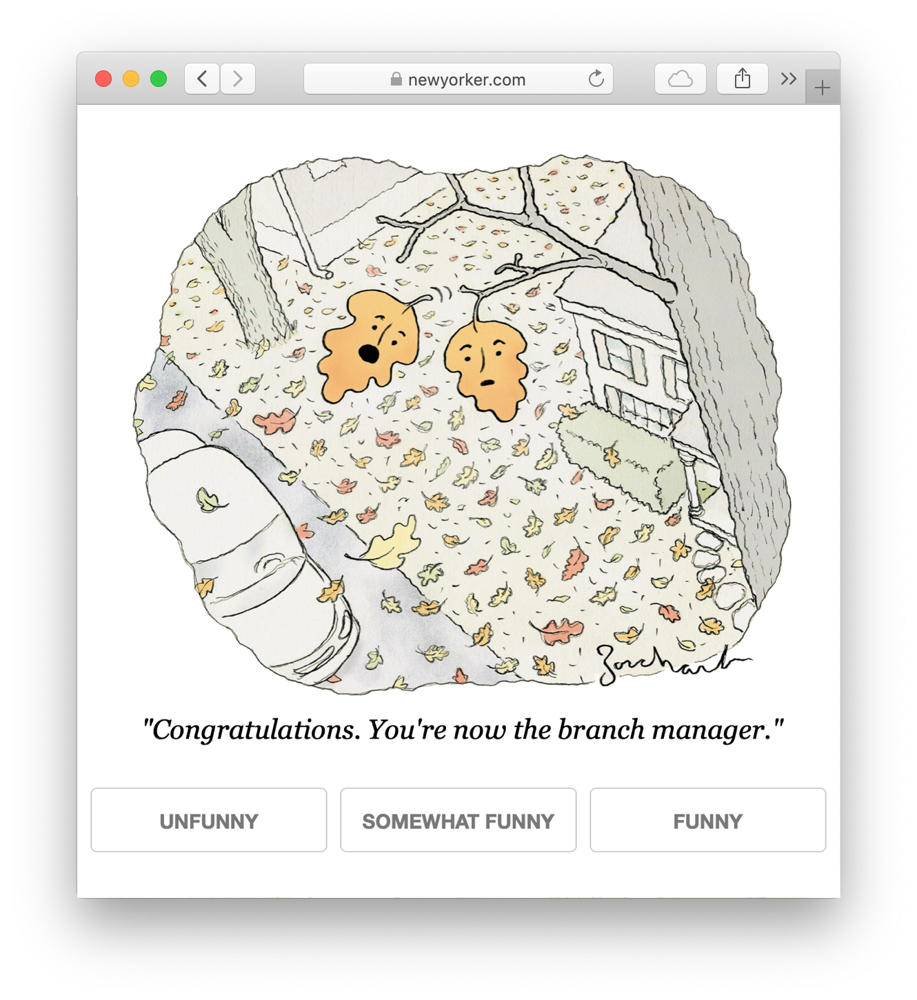

Crowdsourcing interface¶
Queries¶
Largely, one question is asked: “how funny is this caption?”
{kind=link}
These queries are visible at https://nextml.org/captioncontest (which is linked to from https://www.newyorker.com/cartoons/contest).
In select contests we also ask different queries:
Pairwise comparisons happened in contest 508 and 509. For the first part of the contest, we did the normal “how funny is this caption?”. Then, in the last half of the week we took the top 25 captions and asked two questions:
How funny is this caption?
Which of these two captions is funnier?
originality. In contest 560, we asked “how original is this caption?”, with buttons for different levels of originality (I believe “unoriginal”, “somewhat original” and “original”). We asked these alongside the normal “how funny is this caption?” queries; I believe we randomly chose between the two questions. Here’s an example query:

Note
The CSV file 560_summary_KLUCB_original.csv has columns unfunny,
somewhat_funny and funny. These are not the buttons presented! The
buttons presented had “original” instead of “funny”. The text displayed was
“Very original”, “Unoriginal” and “Somewhat original”, and map to the
columns funny, unfunny and somewhat_funny respectively.
Algorithms¶
The caption contest largely uses adaptive data collection where the algorithm adapts to previously collected responses. It does this with the aim of achieving the goal: finding the funniest caption. As a consequence, it tends to ask about the funny captions (if a caption has received nothing but downvotes it’s probably not that funny).
Many contests find this with an adaptive algorithm, Lil’UCB 1 in the earlier contests and KL-LUCB in later contests 2. There are other algorithms besides labels are clearly indicated, and performed alongside “passive” algorithms that do not adapt to previously collected responses (either “round robin” or “random sampling”).
Passive and adaptive algorithms are in contests 497–519, and contest 559. Contest 559 is a performance comparison of Lil’UCB, KL-LUCB and random sampling.
Only passive algorithms are in contest 540
Only adaptive algorithms are in all other contests
References¶
- 1
Jamieson, K., Malloy, M., Nowak, R., & Bubeck, S. (2014, May). lil’ucb: An optimal exploration algorithm for multi-armed bandits. In Conference on Learning Theory (pp. 423-439). http://proceedings.mlr.press/v35/jamieson14.pdf
- 2
Tanczos, E., Nowak, R., & Mankoff, B. (2017). A kl-lucb algorithm for large-scale crowdsourcing. In Advances in Neural Information Processing Systems (pp. 5894-5903). https://papers.nips.cc/paper/7171-a-kl-lucb-algorithm-for-large-scale-crowdsourcing.pdf